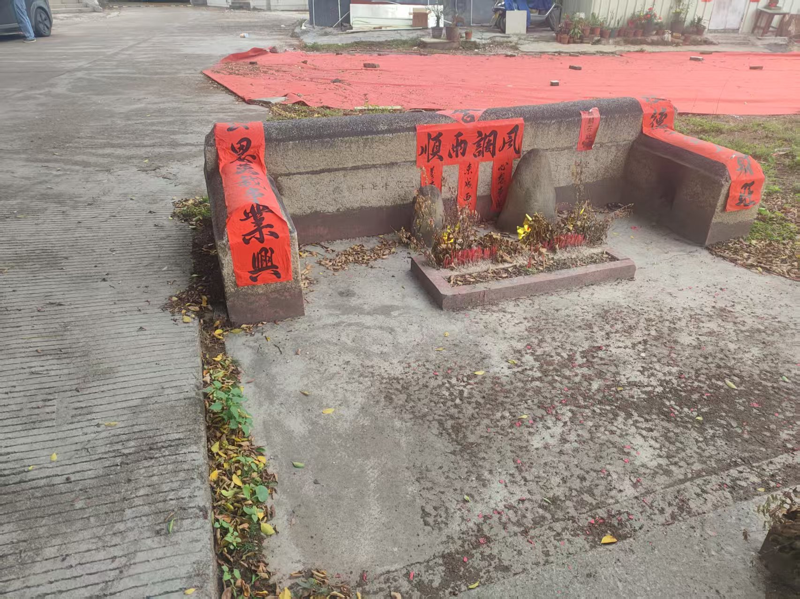
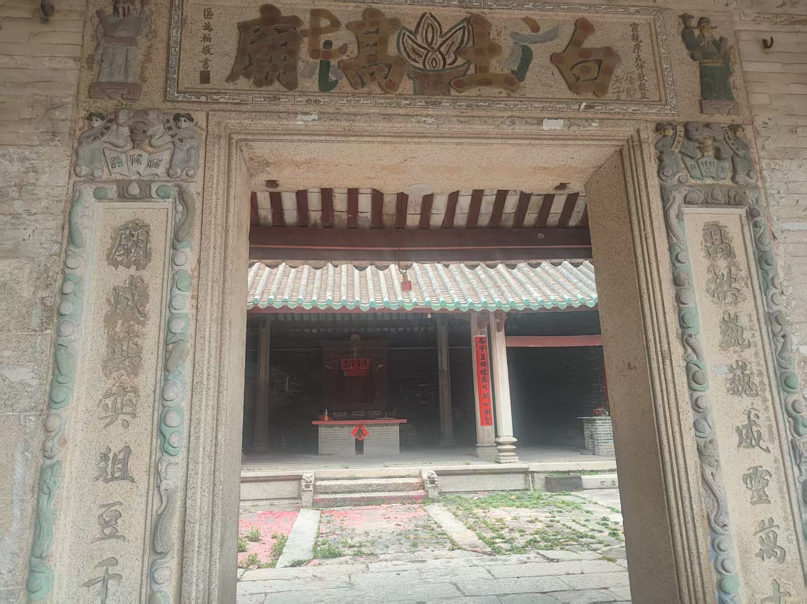
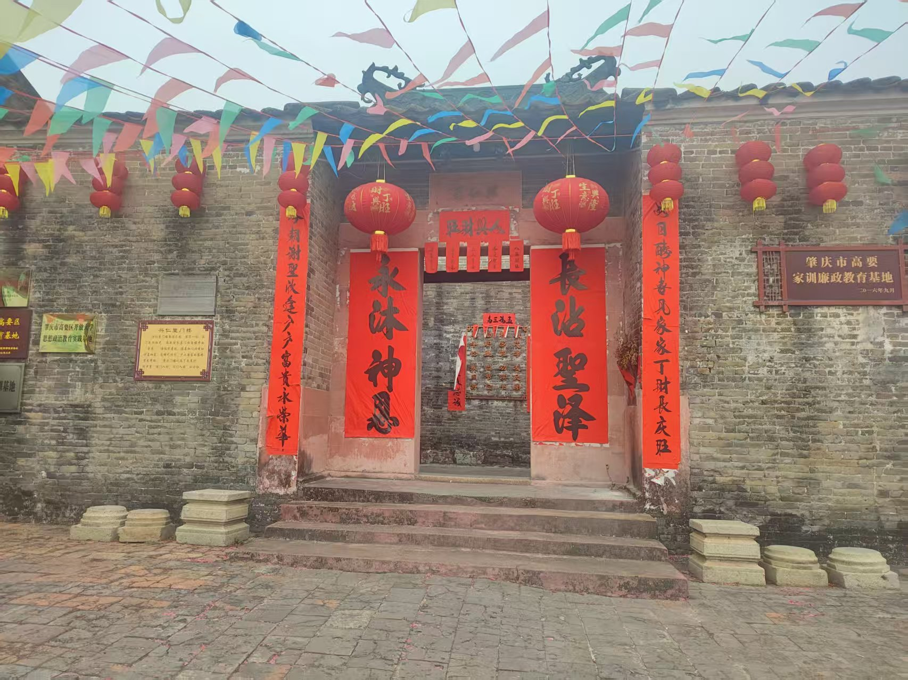

风调雨顺
这是黎雄才故居的村民们举行的求神仪式，他们在门前摆放了精致的拜台，虔诚祈愿来年风调雨顺、五谷丰登。

白土高庙
位于旧肇江公路西侧白土镇南的白土高庙，又名白钰高庙，建在龙沙村高土冈东，故得名。始建于明朝万历四十二年（1614），清朝道光十一年（1831）、清朝宣统二年（1910）、1993年均有重修。

家训家风
肇庆市高要白土坑尾村是岭南画派巨擘黎雄才故里，建村800多年，2012年被评为广东省古村落、广东省最具潜质古村落。家训文化浓，教育效果好，人才辈出，民风纯朴，生活和谐。该家训教育基地由四部分组成：家训展示馆主要展示肇庆30多个姓氏家族祖训、名人典故和当代传承等内容，通过图片、场景和实物等展示形式，通过一个“家”的来还原悠远的历史回声，让领导干部和群众感受千年厚重的家族古训文化。